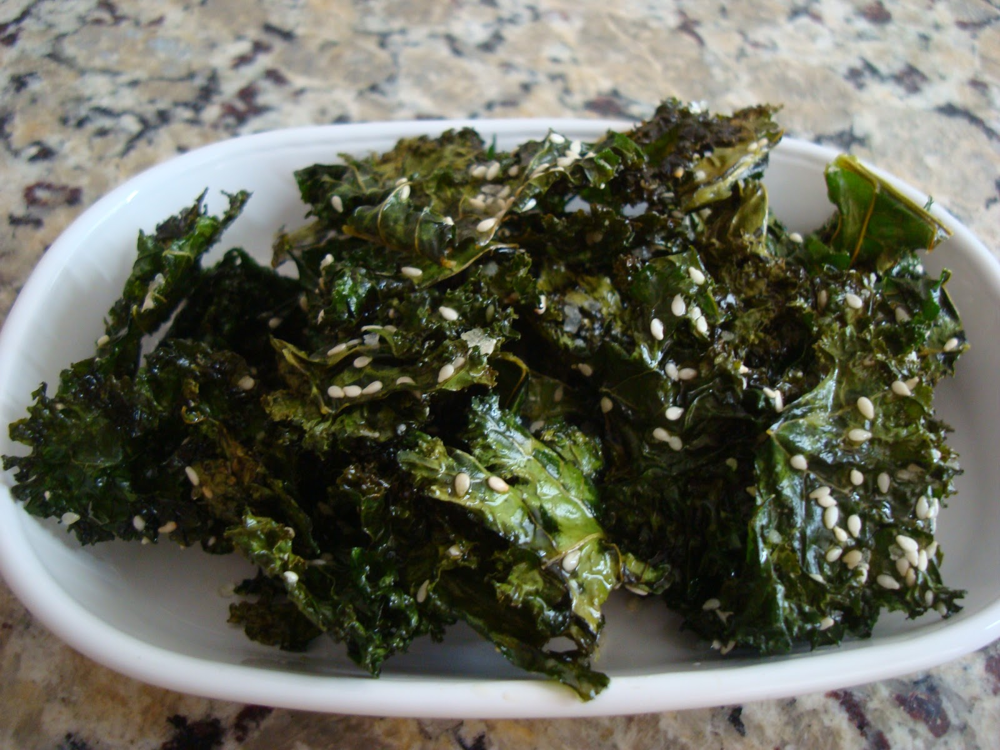

Kale Chips Recipe

Description
Healthy "chips" made with kale and sesame seeds. These are a low calorie nutritious snack!
Ingredients
- Kale (chopped)
- Coconut oil
- Salt
- Toasted sesame seeds
Steps
- Preheat over to 300 degrees.
- In a bowl, toss kale and coconut oil together. (You may need to slightly heat the oil first in order to liquify it.)
- Place on lined baking sheet.
- Bake until crisp (about 20 minutes)
- Let cool.
- Serve & enjoy!